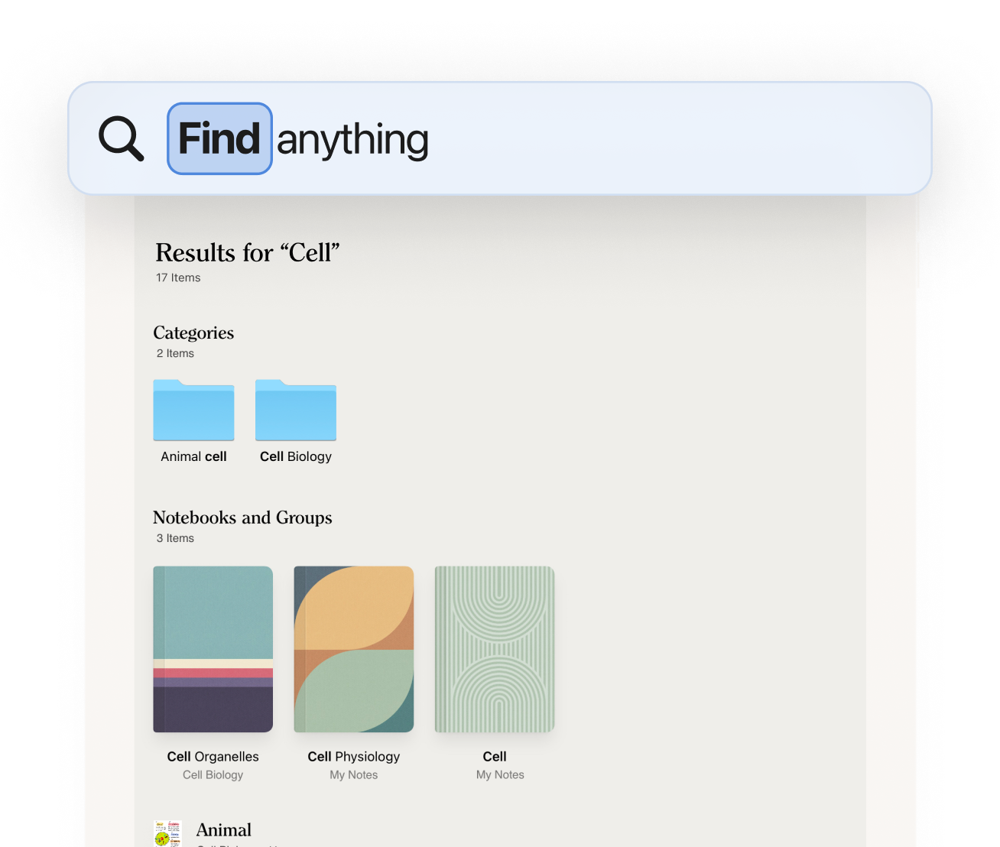
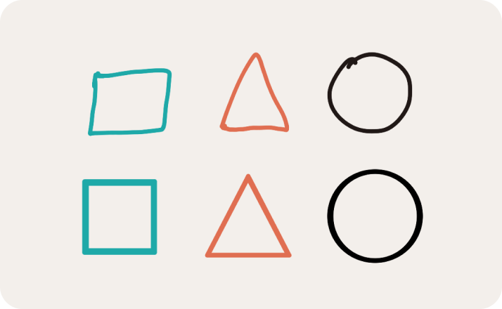

考研课上老师讲得飞起，我却在平板上把节奏抓回来了
考研辅导班的老师语速快到像开了二倍速，纸质笔记本翻得哗哗响还是记不全。一个同样在备考的研友把 Noteshelf 推给我，从此录音、手写、复习三件事在同一块屏幕上对齐了。
那天是高数强化班的第二节，老师站在投影幕前连写三黑板，嘴里的定理推导像机关枪往外蹦。我攥着一支按动中性笔，在活页纸上拼了命地抄，还是漏了两个级数展开的关键步骤。旁边的研友用胳膊肘碰了我一下，把他的平板转过来——屏幕上是一页手写笔记，旁边悬浮着一段录音播放条，他点了一下播放，录音里老师正在讲我漏的那一段，而笔记上对应的位置亮着一个小圆点，跟着录音的进度慢慢往下爬。
"别光写，先录上，回去对着回放找你写的地方。"他说。
我之前一直觉得平板记笔记是花架子——手写手感不如纸，翻页麻烦，真要查东西还得一页一页翻。但那节课后半段我借他在用的那款，去它的noteshelf官网确认了名字，试了十分钟——录音和书写同步这件事，一下就把我击中了。以前用纸笔，笔记是笔记、录音是录音，两套东西对不上。现在我在平板上写一个公式、画一个箭头，那一笔落下的时间戳自动跟录音绑定。回来复习的时候，点笔记上任何一个位置，录音直接跳到那一刻，老师讲的推导过程原原本本跟着出来。
从"记下来了"到"找得到"
录音解决了"别漏"的问题，但更大的麻烦其实在期末——十一节课的笔记写了六本，老师考前划的重点散在每一页的角落。以前要找一个定理的推导，得在一堆草稿纸里扒二十分钟。
Noteshelf 的手写搜索是我后来才解锁的功能。考完高数那天下午，我在整理线代的笔记，随手在搜索框里敲了个"特征值"，屏幕上一下跳出十二处我手写过"特征值"这三个字的位置，每一处都带着所在页面的小缩略图。我点了一下第三处，笔记直接翻到那一页，那里正好是我当时用荧光笔标出来的、老师补充的一个易错点。
那一下我才明白，纸质笔记和电子笔记的差距，根本不在"能不能写"，而在"写完之后能不能用"。手写搜索的原理是后台 OCR 识别——只要你的字迹不是龙飞凤舞到自己都认不出来，它基本上能把你写过的关键词都捞出来。期末那两周我靠这个功能省了不知道多少翻书的时间。

录音和书写，一根时间轴上的两件事
让我再回去说那个录音功能，因为它真的改变了我记笔记的方式。说起来这款软件本身也不难装，平板端直接从应用商店搜，Windows 版则需要从官方下载拿到安装包——它支持平板、手机、桌面多端，这点挺重要的。
以前用纸笔的时候，我要么专注于写、放弃听，要么专注于听、放弃写——两个动作只能二选一。现在我打开 Noteshelf 的录音，老师开始讲课的那一刻，时间轴就启动了。我用触控笔在平板上写，每一笔、每一个公式、每一个箭头，都带着它被写下的那个精确时刻。
复习的时候，我想重温老师讲泰勒展开那一段，直接在笔记里点到我写"泰勒公式"的那一行，录音从那一刻自动开始播放，我写的每一笔也跟着录音的进度高亮——原来我写这行的时候，老师正在讲余项的三种形式。这种同步感太重要了，因为很多时候你记下来的只是结论，而推导的逻辑全在老师的口述里。

丢了一次笔记之后，我花十分钟搭了备份
不过真正让我坚定用下去的，是那次差点把笔记全丢了。
某个周五晚上，我把平板落在自习室，回来之后发现屏幕碎了一道裂纹，触屏几乎失灵。里面存着前八周的所有笔记——高数、线代、英语作文素材，加起来快四十本笔记本。我当时脑子一片空白。
研友让我先别急，去 Noteshelf 的设置里看一下同步。我打开设置翻到「同步与备份」，里面有好几个选项，iCloud、Google Drive，还有一个叫 WebDAV 的。研友自己在用坚果云的 WebDAV 备份，说国内速度快、不用翻墙。我花了十分钟在坚果云开了个免费账户，拿到 WebDAV 的服务器地址和用户名密码，填进 Noteshelf 里，点了一下「测试连接」，成功。
之后 Noteshelf 自动把所有笔记打包上传到坚果云的服务器。周末拿到修好的平板，我用同样的 WebDAV 配置登录，四十本笔记一本不落地恢复了。从那之后我再也没关过自动备份。
后来我才知道，Noteshelf 的 WebDAV 支持不止坚果云一家——OwnCloud、Nextcloud、群晖和威联通的 NAS、Seafile 都能对接。如果你有自己的 NAS，数据完全自己掌握；如果嫌麻烦，坚果云这种商用服务月费也不贵，胜在省心。自建还是商用，取决于你对隐私和成本的权衡，但不管选哪家，搭个备份总比什么都不做强。
贴纸、PDF、手写签名——我后来才发现的附加玩法
用了 Noteshelf 三个月，除了录音、搜索、备份这三件核心事，还发现了几个挺有意思的小功能。后来想玩得更深入，去noteshelf文档翻了一下才发现，它能做的远不止我日常用的那些。
一个是 PDF 批注。老师发的讲义经常是 PDF 格式，以前得打印出来才能高亮重点，现在直接把 PDF 导入 Noteshelf，用荧光笔在屏幕上划就行，划完了还能在页边空白处手写补充。考研政治的那本红宝书 PDF 我从头到尾标了一遍，考前翻的时候全是自己划的重点，比打印出来还好用。
另一个是贴纸。笔记写多了难免单调，Noteshelf 内置了不少手绘风格的贴纸——箭头、可爱的小动物、计划表图标，还有一套叫 Snippets 的自定义贴纸，能用套索工具把自己常用的手写片段圈出来、存成可复用的贴纸。我把自己写的"加油"两个字做成了贴纸，复习累了就在笔记页角落贴一个，也算给自己打个气。
还有那个手写签名功能。上个月帮家里签了一份租房合同，PDF 发过来之后我直接在 Noteshelf 里用签名工具写了自己的名字，调整好大小和位置，导出带签名的 PDF 发回去了。签名作为独立图层存在，写错了还能删了重签，比打印出来再签、再扫描回去省事多了。当然它是视觉签名不是数字证书，真要签正式的法律文件还是得走专门的电子签名平台，但日常流程性的签字，够用了。
考研结束那天晚上，我把平板里的笔记翻了一遍
查完分数那天夜里，我躺在床上翻平板里的 Noteshelf。四十二本笔记本，每一本都对应一个老师、一门课、一段和研友挤在自习室的日子。我点了一下最早那本高数强化班的录音，老师的声音从扬声器里传出来，还是像开了二倍速一样，我手写的笔记跟着录音的进度一行行高亮——那是九月七号下午，我第一次在平板上记下老师写的第一个泰勒公式。
Noteshelf 没有帮我考高分，但它让我在那三个多月里，把脑子塞不下的东西都好好地存了起来，而且在我需要的时候，能一秒就找到。这大概就是一款好的记笔记软件该做的事吧——不是教你怎么学，而是让你想学的时候，手里的东西都在。
这些笔记和录音文件我放在了三个仓库里，怕万一坚果云也出问题。平时国内访问 Gitee 比较快，GitCode 偶尔也能走一走，GitHub 就留着给外网的朋友。总之不管哪家服务抽风，至少还有两份备份兜底，算是我这半年来养成的"多副本"习惯。